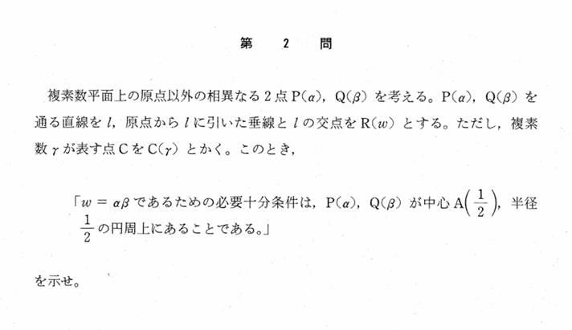

2000年 第2問
複素数平面

分析
類いまれなかなりの良問である。思考力を問う問題としての質が高く、さらに数学的な美しさも兼ね備えている。惜しい点としては、25分という時間制限内で解くには難しすぎて皆が解けず、かなり数学ができる人でないと差をつけられないという点である。
思考力をうまく問えている要因として、$\omega\ $の捉え方が複数個あることが挙げられる。さらにこの複数個のうち、おそらく逆像法的に、$\alpha,\beta から\omega$を作るのではなく、$\omega から\alpha,\beta$を作るという考え方をして、$OR⊥PRかつOR⊥QR$という捉え方するのみが最も処理が簡潔に済む捉え方である。幾何的な部分と、視点を逆から見る必要性を取り入れることで解法選択の幅が広がり、問題の質が向上させている。
そして$\ OR⊥PR\ かつ\ OR⊥QR\ $の条件の使い方すらも、回転が純虚数を用いるか、三平方の定理を用いるか、相似を用いるかなど豊富な解法が考えられる。そしてどれでも現実的に解くことが可能である。
さらにこの問題は同値といいつつ、$\omega=0$は許容されていない。そのため、両者に$\omega\neq0$を明記する必要がある。さらに、$\omega=\alpha,\beta$のときは除外して考える必要があったりなど、考慮すべき注意点が多いことも厳密な議論ができるかを問う問題としての質を上げている。
$OR⊥PRかつOR⊥QR$という条件の捉え方が最も最適と言ったが、計算や論証が煩雑になるものがあるものの、複素数と相性のよい極座標を用いる方法、直線PQの条件から直交の条件を含んだ式を生み出す方法、図形的に相似を用いる方法(場合分け注意)、$\sin\theta$の媒介変数表示から$\tan$半角置換で媒介変数表示を作り十分性を示す方法、自ら反転を作って条件を得る方法など、本当に様々すぎる解法が存在し、それがこの問題の美しさを感じさせるものの大きな要因でもある。
背景
反転と深い関係があることが分かった。$$z=\frac{1}{z'}$$の反転を中心1/2、半径1/2の円に施すと、$\mathrm{Re}(z)=1$の直線（以下直線lとする）になる。そして「反転を施したものが直線l上」という条件を同値変形すれば、$\omaga=\alpha\beta$が得られるのである。
したがって、この反転を用いることで、この問題でなぜ中心1/2、半径1/2の円という謎のものが題意を満たす重要な役割をもつのかが直感的に理解できるのである。
さらに加えて、線分0$\omega$に垂直であり$\omega$を通る直線を直線lとして、次は変換$$f:z\mapsto\frac{\alpha\beta}{z}$$を考えてみると、面白いことが分かる。直線lに変換fを施すと円Cとなり、さらに$\beta$に変換fを施すと$\alpha$、$\alpha$に変換fを施すと$\beta$になる。
つまり、与えられた条件を図式化し、適切な反転を施しただけであるから同値であるという捉え方もできるということである。
これらを試験時間内に作り出して解答を作り上げることは至難の業であるのでこのような解法は想定されているかは分からないが、
・反転の中心を通る直線→反転の中心を通る直線（自分自身）
・反転の中心を通らない直線→反転の中心を通る円
・反転の中心を通る円→反転の中心を通らない直線
・反転の中心を通らない円→反転の中心を通らない円
という意識を持っていることを前提にすると、反転を考えられると少し優位に立ち得るのかもしれない。